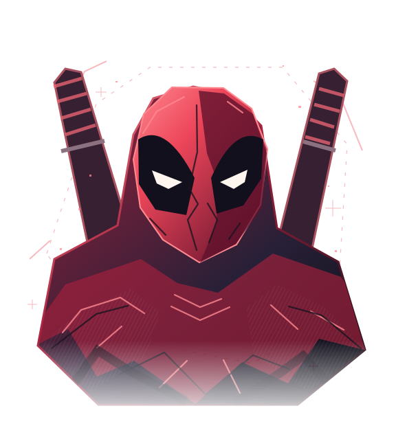
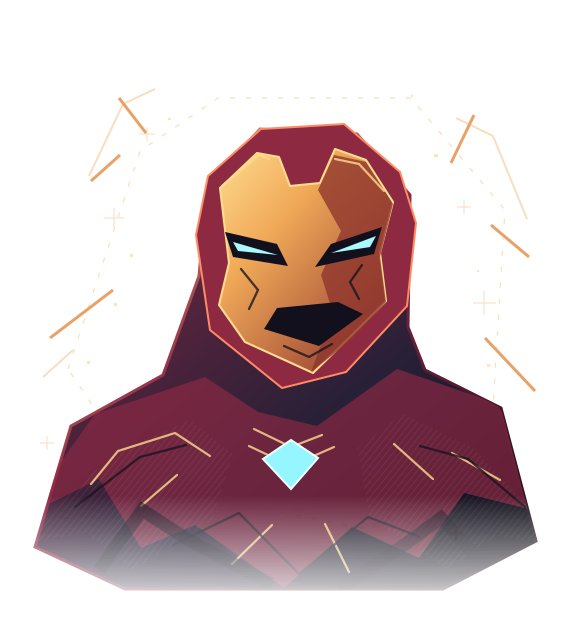
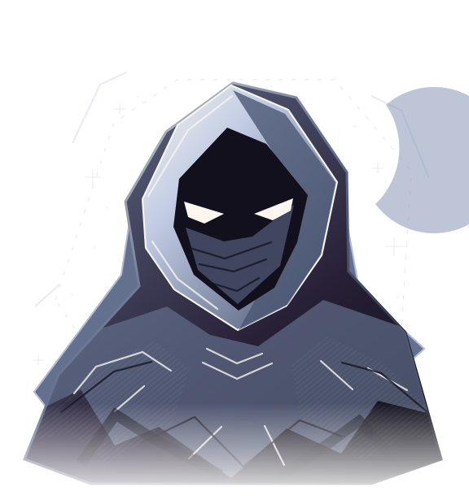

Deadpool
A mercenary with a healing factor and a talent for turning impossible odds into a punchline.
Signature abilities
- Regeneration
- Twin katanas
- Unpredictable tactics

Eight legends from across the Marvel Multiverse. Who are you bringing into the arena?
A mercenary with a healing factor and a talent for turning impossible odds into a punchline.

The ruler of Latveria pairs armored genius with ancient sorcery. Every move is part of a larger plan.

A quick-thinking web-slinger who relies on agility, invention, and a sense for danger to protect New York.

An inventor in powered armor, built to dominate the air and improvise when the plan goes sideways.

A veteran fighter with adamantium claws and a healing factor that keeps him standing through brutal battles.

A wielder of chaos magic who can turn the rules of reality into a weapon all her own.

The Fist of Khonshu patrols the night in white, armed with crescent darts and years of combat training.

The God of Mischief uses illusions and clever bargains to make opponents doubt what they see.

08 fighters Select a character
Browse eight heroes, villains, and anti-heroes, each with a distinct illustrated portrait and color palette.
Tap a card or use the arrow keys inside the roster to switch the fighter and change the arena’s theme.
Open each character profile to learn their alias, allegiance, and three signature abilities.